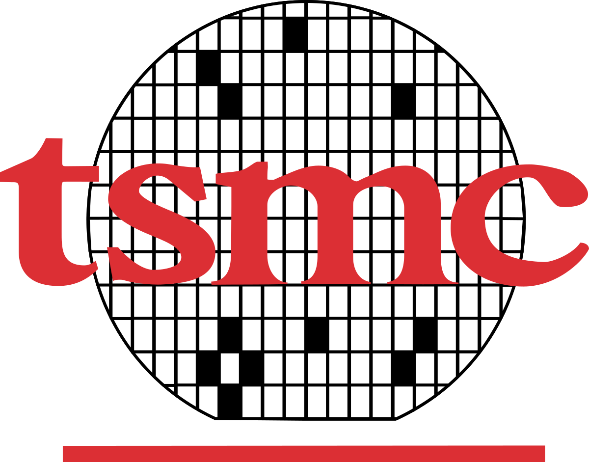

Taiwan Semiconductor Manufacturing Company
Software EngineerNov. 2024 – Present
Equipment Data Collection and Monitoring Platform
- Own and operate a Kubernetes-based platform collecting real-time data from ~500 semiconductor manufacturing tools via Java services and the SECS communication protocol, keeping the environment healthy for factory users across multiple sites
- Built equipment-specific collectors retrieving SVID values every five seconds, streaming real-time and historical data to Redis and a centralized Lakehouse
- Developed Spring Boot services backed by MariaDB with a React front end; serve as first-line triage for platform incidents, performing root-cause analysis and coordinating fixes with equipment and network teams
- Deployed containerized collectors and replicated frontend/backend services on Kubernetes; the platform replaced a legacy DCS solution, saving approximately NT$10 million per factory deployment
Facility Infrastructure Asset Management Platform
- Own a centralized platform managing 5,000+ factory servers across 20+ manufacturing sites, automating daily health checks (OS update status, monitoring coverage, antivirus, asset ownership) to reduce manual audit overhead
- Integrated with an internal HR service to detect ownership changes and keep server records current, consolidating infrastructure inventory and compliance reporting for factory teams